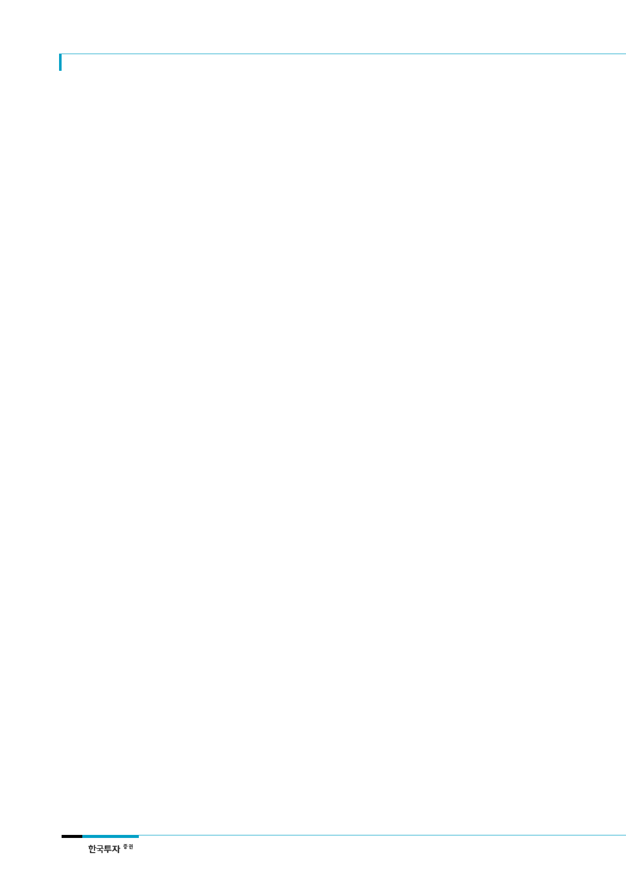

SK하이닉스(000660)
기업개요
기업개요
SK하이닉스는 PC, 서버 등 컴퓨팅 제품, 스마트폰, 태블릿 등 모바일 제품의 핵심 부품인
DRAM, NAND 및 MCP 등 메모리 반도체를 생산, 판매하는 종합 반도체 회사이다. 메모리
세계 2위 업체일 뿐만 아니라 제품 원가경쟁력 선두 권으로 시장지배력을 확고히 하고 있다.
SK하이닉스는 현재 이천, 청주의 국내 사업장을 비롯하여 중국 장쑤(江蘇)성 우시(無錫)시에
생산공장을 운영하고 있다. 2000년 유동성 위기로 2001년 채권단 공동관리 하의 워크아웃에
들어갔으나, 조기 정상화를 통해 2005년 워크아웃을 졸업하고, 2012년 2월 SK텔레콤에 인
수된 이후, 재무 안정성이 높아졌다.
14